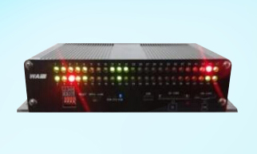
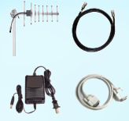
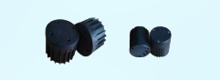

RosimWAP-348x
Power your ITS application
Real-time wireless traffic data access pointer
No cables, no cutting, no traffic close
Less time, less cost, less maintenance

-
WAP-348x Wireless Access Point acts
as a gateway between user applications
and wireless vehicle detection network
formed among the WVD sensors
installed on the road surface. WAP-
348x manages the network and collects
data from all the sensors, and on the
other hand, provides data interface to
user systems.
-
APPLICATIONS
ITS Traffic flow monitor
Speed enforcement
Red light enforcement
Travel time guidance
Traffic signal optimization
Freeway incident detection
Entrance vehicle counting
-
KEY FEATURES
433MHz 120m transmit range
-40～85℃ work temperature
USB/RS-232/Ethernet data port
GPRS communication (Optional)
DC9-36V/PoE power supply
48 detection channels
48 OCs output terminals
48 detection result LEDs
L23/W10/H4.9cm
-
AVAILABLE MODELS
WAP-348x is available for
G/P models
G: GPRS version
P: PoE supply version
-
ACCESSORIES

- 1. Yagi antenna
- 2. RF cable
- 3. Data cable
- 4. Power supply
-
FUNCTIONS
Data collection and transmission
Network management
Sensor configuration
Detection result display
-
RELATED PRODUCTS
WAP-348x is designed to
collect data from WVDs
•WVD-130x
•WVD-230x
•SensorManagerTM software

-
SUPPORT SERVER
Online shop :
http://rosimits.en.alibaba.com
Tel: +86-760-85313186
Fax: +86-769-85313186
Mail:Rosimits@163.com
www.rosimits.com
 English
English 中文
中文